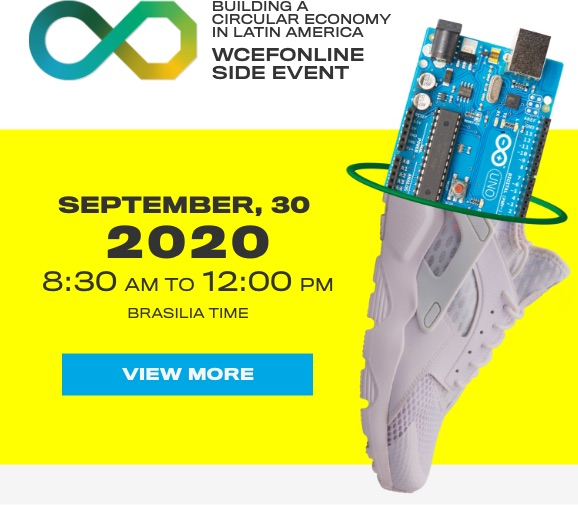
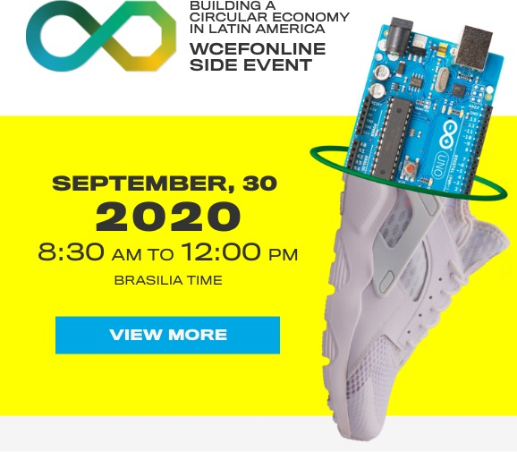

It is not just today that we at Fiesp, Ciesp, Sesi and Senai in São Paulo, recognize that, without everyone's commitment to sustainable development, we will compromise not only the competitiveness of our industry and economic growth, but mainly the future of the planet.
That is why we have been promoting studies, debates and exhibitions related to the theme of sustainability for years, in addition to awards that recognize and encourage efforts by the productive sector in this area. A fundamental part of the work also involves technical support to industries in the search for energy efficiency, reduction of greenhouse gas emissions and waste disposal, as well as improvement in production processes.
Thus, recycling, reverse logistics, low carbon economy, among others, are aspects in which we are already protagonists and that the Brazilian industry already practices successfully. However, it is time to take the next step, that is, to help our productive sector to be at the forefront of the current challenge, which is the circular economy.
The linear model, that is, the one that begins with the extraction of raw material, goes through its transformation and use, and ends with the disposal of waste, is running out. The circular economy is the alternative for this model, as it is inspired by what has always prevailed in nature, that is, that nothing is lost, everything is transformed. Thus, from this perspective, the choice of raw material, the production process, packaging, transportation, reuse of what would be discarded, in short, the entire cycle is reviewed to not only preserve the environment, but also to create a regenerative production system.
It is based on this spirit that we launched this Circular Economy portal. To bring together all the initiatives of the industry and its entities in order to promote this revolution, such as the South American Forum on Circular Economy 2020, among other events, courses and publications.
Thus, through these and many other actions, Fiesp, Ciesp, Sesi and Senai promote the definitive insertion of the industry in this paradigm shift, which will allow us to face the complex challenges of the coming decades. We will do this thinking not only about the success of the productive sector, but also about the future of the planet.
Paulo Skaf
President of Fiesp, Ciesp, Sesi and Senai
Fiesp, Ciesp, Sesi and Senai from São Paulo recognize the urgency of a global change in the means of production and in the behavior of society, in order to guarantee sustainable growth and the future of the planet. Therefore, they are engaged in the mission of enabling the Brazilian productive sector to promote its transition to the Circular Economy. For that, they develop studies, publications, projects, awards and events that will be gathered in this portal.
One of the main initiatives is the South American Circular Economy Forum, held in partnership with Sitra, a Finnish innovation fund that organizes the World Circular Economy Forum. The global initiative brings together more than 2,000 business leaders, policy makers and experts from around the planet to present the best circular economy solutions in the world.
We will work together to face the challenge of implementing the Circular Economy. Stay on top of the idea that has changed the forms of production and consumption worldwide!
The current pattern of production in the world is linear, based on the extraction of raw materials, transformation, use and disposal of waste, which has brought unprecedented economic growth, but the days are numbered. If the consumption of natural resources remains in this model, the reserves available for some materials will be depleted in a few decades.
There is an urgent need for global change to unlink growth in growing demand for raw materials and natural resources as the world's population grows. It is necessary to rethink the means of production and consumption patterns.
Circular Economy appears as a counterpoint to this linear model. This new pattern associates economic growth with a development cycle that defends the more efficient use of natural resources and increased competitiveness in the industry, with the management of finite stocks and renewable flows. In addition, it allows companies to reduce production costs and losses, generating new sources of revenue and decreasing their dependence on virgin raw materials.
The transition to the Circular Economy requires coordination between measures from both the public and private sectors. On the one hand, public initiatives are needed that include regulatory, fiscal, financial and innovation incentives, in addition to educational campaigns. On the other hand, companies and private entities play an essential role in accelerating this transition by implementing innovative business models. Examples of this are providing services instead of selling the product, using collaborative platforms, as well as investing in new production chains for the reuse, maintenance, remanufacturing and recycling of products.
The adoption of circular economy practices by the industrial sector, must be seen as a strategic factor for survival, an opportunity to reduce production costs, but above all as a factor of competitiveness and meeting legal and regulatory requirements for its insertion in global markets, especially in international agreements.
 
